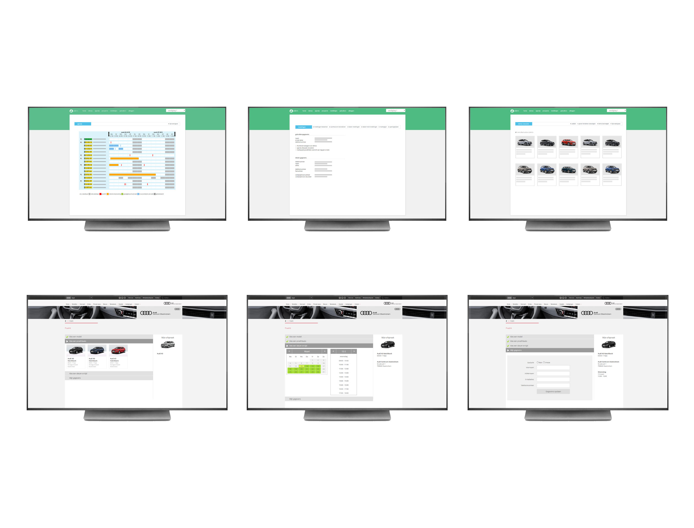

Pieter Goossens
Digital designer
Adem is een product dat dealerbedrijven ondersteunt in het beheren en efficiënt exploiteren van hun autovoorraad. De Back End van Adem is een dealer-standaard voor VOLKSWAGEN, AUDI, SEAT en SKODA. Het product bestaat al meer dan 10 jaar en in 2016 is daar de verkopersapp aan toegevoegd.
Toevoegen van een proefrit check-in én check-outprocedure in de verkopersapp. Dit stelt de verkoper in staat samen met de klant een digitaal proefritformulier in te vullen in de showroom. In de meeste gevallen gebeurd dit nog met een papieren inschrijfformulier. Het doel was niet alleen dit formulier te vervangen, maar ook het toevoegen van extra functionaliteiten zodat dit proces completer en beter zou aansluiten bij het moderne werkproces van de dealer.
Autoverkopers Autodealers die gebruik maken van Adem zijn: Wittebrug, Waeler, Van den Udenhout, Pouw, Auto Muntstad, Dago, Vallei Autogroep, Infiniti Amsterdam
De app heeft twee belangrijke functies; het inplannen van proefritten en het in- en uitchecken van een proefrit.
Er is een groot verschil tussen het inplannen van een proefrit op de standplaats van de verkoper of op een nevenvestiging. Als de auto waar een klant in wil rijden niet beschikbaar is op de standplaats dan kan de verkoper deze reserveren bij een nevenvestiging. Dit heeft als gevolg dat de auto op deze vestiging tijdelijk niet meer beschikbaar is omdat die naar de nieuwe vestiging moet worden gebracht. Stel een verkoper werkt op verschillende vestigingen, dan moet hij zijn standplaats in de app kunnen aanpassen wat een ander filterresultaat oplevert. Zo zijn er plantechnisch meerdere complexe scenario’s denkbaar.
Het in- en uitchecken van een proefrit is vaak per dealer verschillend en soms zelfs per merk. Elke stap kan in de Back End aan- en uitgezet worden zodat er een dynamische procedure ontstaat.
In samenwerking met ORIBI is er een rijbewijscontrole ingebouwd. De verkoper uploadt een foto van het rijbewijs waarna dit via de app meteen gecontroleerd wordt op geldigheid bij het RDW. Binnen de app is het ook mogelijk om schade vast te leggen (oud en/of nieuw) en het standaard eigen risico van de proefritauto aan te passen. Als de klant akkoord gaat met de proefritcheck dan zet hij zijn handtekening in het eindscherm en krijgt een kopie van de overeenkomst per e-mail toegestuurd.
In de Back End-omgeving kan de gebruiker demo’s toevoegen en beheren. Er is een duidelijk overzicht van de proefritten per demo en het totale demopark. Ook kan men eenvoudig demo’s zoeken bij collega-dealers en een reservering aanvragen. Er zijn meerdere gebruikersrollen in de back end zoals: gebruikersbeheerder, demobeheerder, financieel beheerder en verkoper. Voor de gebruikersbeheerder en de demobeheerder zijn er vier overzichten aanwezig, namelijk een planningsoverzicht, een demo-overzicht, een overzicht met proefritten per vestiging en een proefrittengrafiek.
De front end-omgeving is een weergave op de website van de demovoorraad zoals deze is ingevoerd in de back end. Klanten hebben hierdoor inzicht in de actuele demovoorraad en zij hebben de mogelijkheid om direct een proefrit zelf online in te plannen.